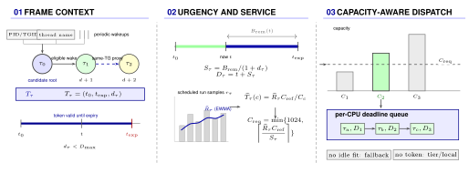

sched_ext · Android UI · research prototype
A loadable sched_ext policy that carries frame context across sleeps
and schedules the tasks a frame actually depends on.
scx_fcp is a frame critical-path and thermal-debt scheduler for
heterogeneous Android and automotive SoCs. It targets VSYNC-driven display pipelines
— input, UI thread, render thread, SurfaceFlinger, and HWC — on
big.LITTLE and tri-cluster (LITTLE / Big / Prime) systems.
Android frames are chains of short-lived tasks that sleep and wake across process boundaries. A per-task scheduler sees each wakeup independently, while the frame root and the helpers it depends on disappear between scheduler callbacks. scx_fcp keeps a bounded notion of that context in BPF and uses it for placement, without framework or application changes.
All scheduling decisions execute in BPF. The userspace daemon discovers per-CPU capacity, populates BPF maps and rodata, and reports telemetry.
Status: experimental research prototype. Options and telemetry may change, and the project does not make a performance claim on this page.
The policy combines three mechanisms: bounded criticality propagation, burst-window utilization, and thermal-aware core selection.

Mechanism overview. Candidate-root evidence seeds a bounded token that propagates on eligible wakeups; a same-thread-group edge is a dashed proxy, not a verified dependency. Remaining slack and an EWMA of scheduled run intervals determine urgency and requested CPU capacity (clipped to [1,1024]). The EWMA is not a direct estimate of future work; wakeup and capacity inferences remain heuristic.
The scheduler is part of the scx workspace and builds with Cargo. It runs on any kernel with sched_ext and BTF; the Android 6.1 backport lives in a separate repository.
# Build the scheduler
cargo build --release -p scx_fcp
# Attach at 60 Hz (16667 us frame budget), 2 s telemetry
sudo ./target/release/scx_fcp -f 16667 -c 2000 -i 3000 -b 6000 -t 850 -s 2Kernel requirements:
CONFIG_SCHED_CLASS_EXT=yCONFIG_DEBUG_INFO_BTF=yCONFIG_SCHED_PROXY_EXEC=n on Android GKI kernels that carry Proxy
Execution; it conflicts with sched_ext dispatch queues.
CONFIG_FUNCTION_TRACER is optional: scx_fcp attaches purely through
bpf_struct_ops.
Full setup, cross-compilation, Android bundle packaging, and benchmark instructions are
in the repository's SETUP.md.